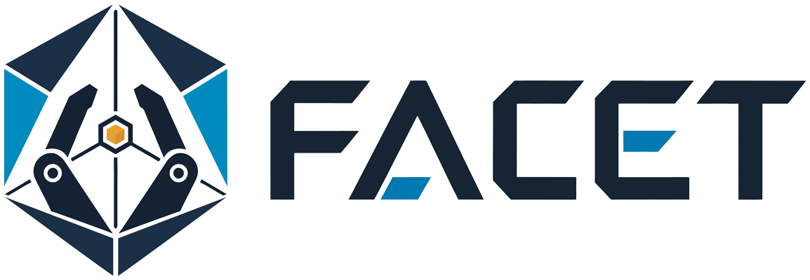
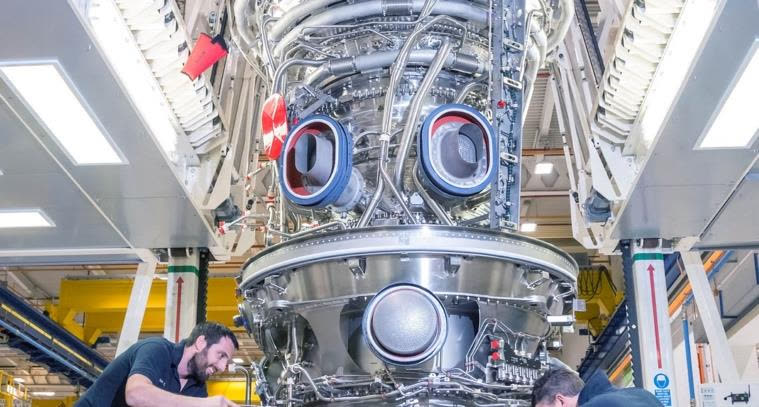
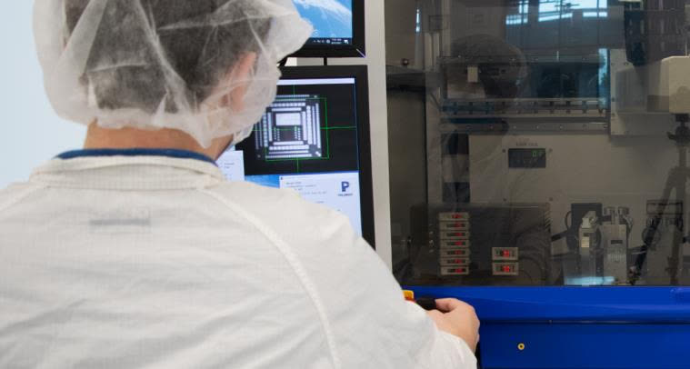
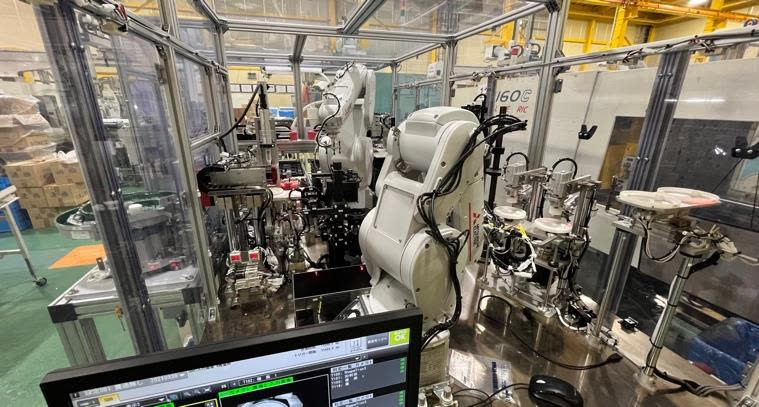
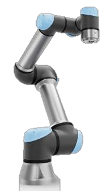
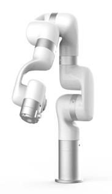
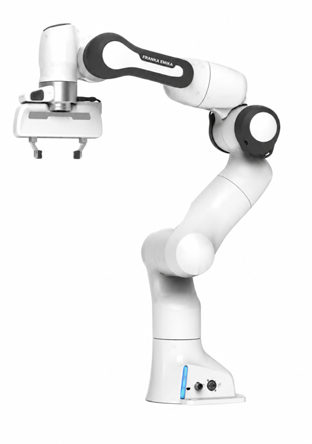
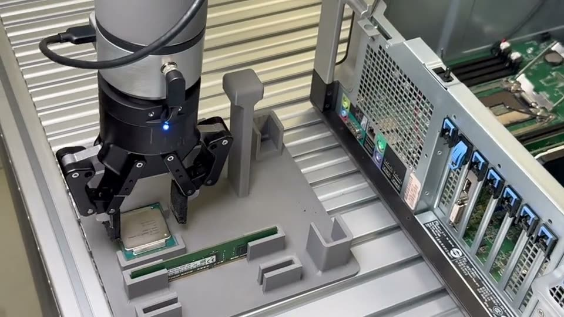
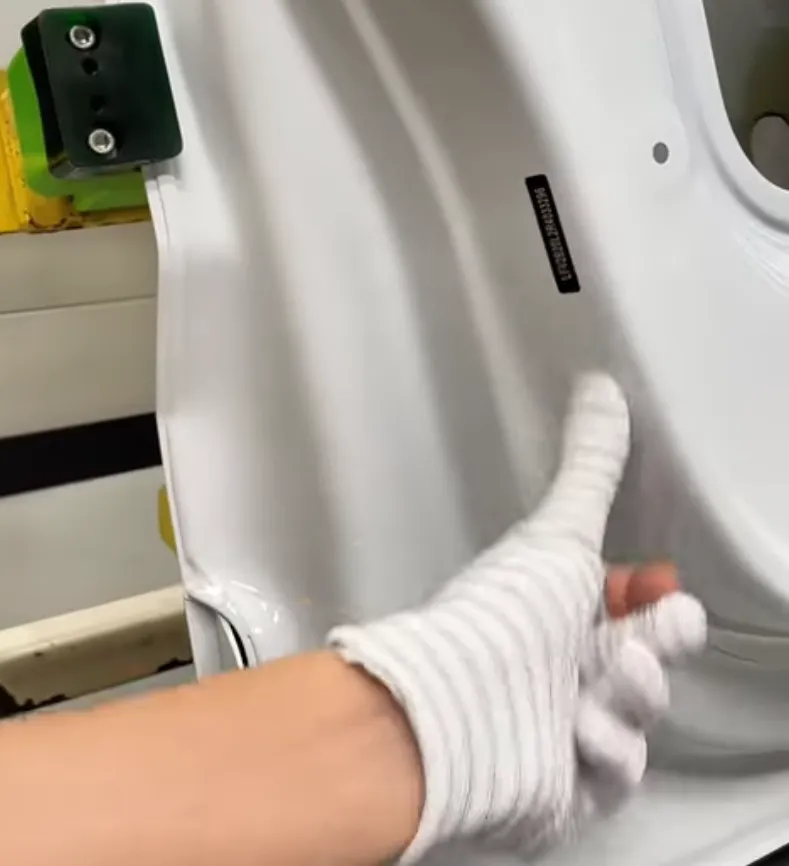
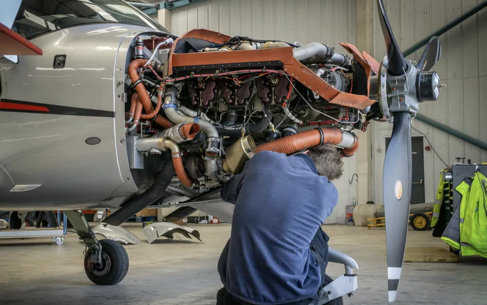

ManuFacet-1K, a force-synchronized precision-assembly dataset — and FACET-0, the foundation model it trains: reasoning, acting, and correcting at 0.5 mm.
Assembly, insertion, fastening, alignment — the operations that decide quality and yield are still labor-intensive and brittle to automate.



Sources: Rolls-Royce · Palomar Technologies / Semiconductor Digest · Deloitte × The Manufacturing Institute, 2021.
Under 1% of public robot data touches manufacturing assembly — and scale buys generalization, not the contact judgment, force correction, and recovery that ±0.1 mm insertion demands. Crossing that gap takes a dataset built for contact.
One uncut evaluation run on a real Dell workstation — RAM, CPU, GPU, and disk, back to back.
1,000 hours of force-synchronized precision assembly — one schema, one aligned action space, collected live across two sites.



One interface bridges general VLAs and precision contact control — reference action → force residual → safe execution, corrected at 0.5 mm.
Same insertion, with and without force fusion: lower peak contact force · smaller insertion error · faster recovery.
Teleoperated assembly plus assembly-VQA instills skills and task priors — what to do, and how it should feel.
Reward-driven updates from real rollouts: +45% success, −40% cycle time, +60% failure recovery.
Few-shot, safety-bounded transfer to new parts, fixtures, and embodiments — ~6.6% of weights, +30% adapted success.
Task definitions, tolerances, and success criteria come directly from partner production lines.


